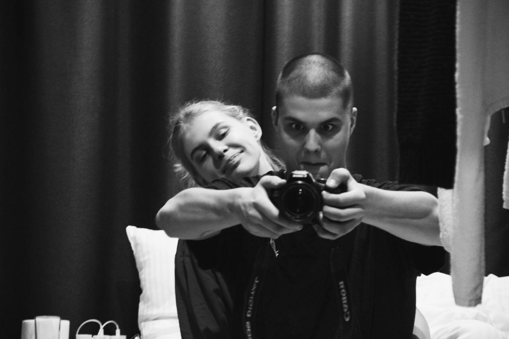

Любовь - смысл жизни.
Любовь к Кате для меня — это не просто чувство. Это то, что придало моей жизни настоящий смысл. До неё многие вещи казались обычными, дни проходили один за другим, и я не задумывался, насколько сильно один человек может изменить всё внутри. Но когда в моей жизни появилась Катя, я понял, что любовь — это не просто слова, а сила, которая делает человека лучше. Она научила меня по-другому смотреть на мир. Рядом с ней я стал добрее, спокойнее и увереннее в будущем. Я начал ценить простые моменты — разговоры, улыбки, совместное время. Раньше я не понимал, что именно из таких мелочей и складывается настоящее счастье. Катя стала для меня не только любимым человеком, но и частью моей души. С ней я хочу строить будущее, создавать семью, проходить через все радости и трудности вместе. Потому что любовь — это не только красивые слова, это поддержка, верность и желание идти по жизни рядом.И именно благодаря ей я понял одну простую вещь: когда ты по-настоящему любишь, жизнь перестаёт быть просто временем, которое проходит. Она становится дорогой, по которой хочется идти вместе — шаг за шагом, день за днём.

Как катя изменила меня:
- Я стал добрее и терпеливее по отношению к людям.
- Я начал больше ценить простые моменты — разговоры, прогулки, совместное время.
- У меня появилось желание становиться лучше каждый день.
- Я стал серьёзнее относиться к будущему и задумываться о семье.
- Я научился по-настоящему заботиться о другом человеке.
- Я стал спокойнее и увереннее в себе, потому что рядом есть она.
- Я начал больше верить в любовь и в хорошие вещи в жизни.
- Я стал сильнее эмоционально, потому что хочу быть опорой для неё.
- Я понял, как важно беречь человека, которого любишь.
- Я стал смотреть на мир с теплом и благодарностью.
- У меня появилось вдохновение строить совместное будущее.
- Я стал больше ценить отношения и доверие.